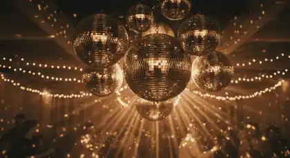
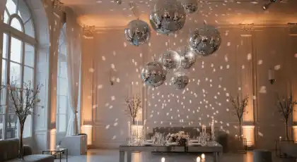
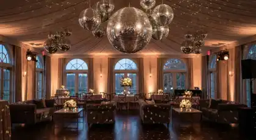
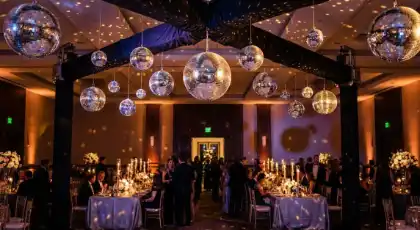
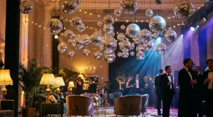
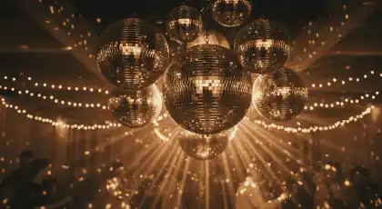
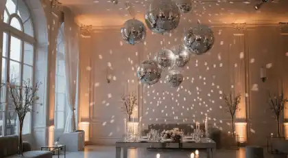
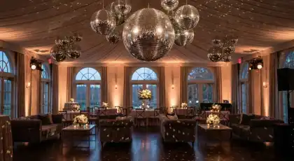
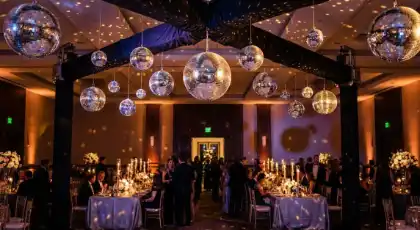
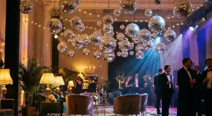

RENTA DE
BOLAS DISCO
Efectos clásicos de luz espectaculares con bolas de espejos giratorias para fiestas retro, discotecas y eventos temáticos en CDMX
¿Buscas crear una atmósfera retro inolvidable con miles de reflejos de luz bailando por todo el espacio? La renta de bolas disco de RESOIL es la solución clásica que transforma cualquier evento en una experiencia nostálgica perfecta. Desde fiestas temáticas de los 70s, 80s y 90s hasta bodas vintage y eventos corporativos retro, nuestras bolas de espejos profesionales crean efectos visuales espectaculares en CDMX.
Nuestras bolas disco profesionales combinan espejos de alta calidad con motores silenciosos y sistemas de iluminación LED optimizados. Cada instalación de RESOIL está diseñada para crear esa magia clásica de discoteca que transporta a tus invitados a la era dorada del disco. Con nuestras bolas disco profesionales, convertimos tu evento en una fiesta retro auténtica e Instagram-worthy.
Galería de Eventos Retro Realizados
Instalaciones profesionales de bolas disco que transforman eventos en CDMX
 









Estas imágenes son algunos de nuestros eventos de éxito con bolas disco profesionales en CDMX. Cada instalación refleja nuestro compromiso con la autenticidad retro y atención al detalle que caracteriza a RESOIL.
Por Qué la Renta de Bolas Disco Profesionales Es la Decisión Correcta para Tu Evento
En un mundo saturado de efectos de iluminación moderna, las bolas disco ofrecen algo que la tecnología LED no puede replicar: nostalgia auténtica y miles de reflejos de luz naturales que crean una atmósfera mágica única. En RESOIL, entendemos que las bolas disco no son solo decoración retro, son generadoras de experiencias que transportan a tus invitados a la época dorada de las discotecas.
¿Por qué los mejores organizadores de eventos temáticos en CDMX eligen las bolas disco de RESOIL? Porque ofrecemos más que espejos giratorios: entregamos instalaciones profesionales con motores silenciosos de calidad, iluminación LED optimizada y montaje seguro certificado. Nuestro equipo profesional maneja todo el proceso, desde la inspección del punto de montaje hasta la calibración perfecta de luces, permitiéndote disfrutar de efectos retro perfectos sin preocupaciones.
Aplicaciones Estratégicas: Dónde Brillan Nuestras Bolas Disco
Eventos Donde los Efectos Retro Son Esenciales
Fiestas Retro y Temáticas Vintage
Perfectas para fiestas temáticas de los 70s, 80s y 90s. Bolas disco auténticas que recrean la atmósfera clásica de discoteca con miles de reflejos de luz. Combinables con música disco, luces estroboscópicas y decoración vintage para experiencias nostálgicas totales que transportan a tus invitados en el tiempo.
Bodas con Estilo Retro
Bodas vintage que buscan ese toque nostálgico elegante. Bolas disco que crean ambiente romántico retro durante el primer baile y energía clásica en la pista. Ideal para parejas que aman la estética de los 70s/80s y quieren una boda única e Instagram-worthy con efectos de luz atemporales.
Eventos Corporativos Temáticos
Fiestas de empresa con tema retro, lanzamientos de productos vintage-inspired y eventos de networking con concepto nostálgico. Las bolas disco crean conversación instantánea y ambiente relajado que rompe el hielo. Perfectas para empresas que quieren eventos memorables y diferentes.
Discotecas y Clubs
Instalaciones permanentes o temporales para clubs nocturnos. Bolas disco profesionales de gran tamaño que crean el efecto visual icónico de discoteca. Motores industriales de alta resistencia para operación continua noche tras noche. Iluminación LED RGB sincronizada para efectos multicolor espectaculares.
Fiestas de XV Años Temáticas
XV años con temas retro que están trending en TikTok e Instagram. Bolas disco que crean ese efecto vintage viral perfecto para videos y fotos. Combinables con vestuario retro, música clásica y decoración temática para crear experiencias únicas que generan contenido memorable para redes sociales.
After Parties y Celebraciones Nocturnas
After parties de bodas, graduaciones y eventos especiales. Bolas disco que transforman espacios en pistas de baile instantáneas. Perfectas para crear ambiente de fiesta sin necesidad de equipos complejos. Instalación rápida para sorprender a invitados y mantener la energía alta hasta la madrugada.
La versatilidad de nuestras bolas disco profesionales las convierte en la solución perfecta para cualquier evento que busque ese toque retro auténtico. Desde fiestas íntimas hasta eventos masivos, nuestros sistemas se adaptan a cualquier visión y espacio.
Paquetes de Bolas Disco: Soluciones para Cada Escala
RESOIL ofrece 5 paquetes escalables de renta de bolas disco, desde eventos íntimos hasta fiestas masivas. Cada paquete incluye motor profesional, iluminación LED dirigida, sistema de montaje seguro, instalación completa y desmontaje. Las especificaciones técnicas se traducen directamente en efectos visuales perfectos.
| Paquete | Tamaño Bola Principal | Equipamiento | Ideal Para | Instalación Incluida |
|---|---|---|---|---|
| Clásico | 30cm de diámetro | 1 bola disco + motor profesional + 1 spot LED blanco dirigido | Eventos íntimos 30-50 personas, espacios pequeños, decoración retro discreta | Sí - 30 minutos |
| Retro | 40cm de diámetro | 2 bolas disco + motores sincronizados + 2 spots LED blancos + sistema de montaje dual | Fiestas 50-100 personas, salones medianos, bodas vintage íntimas | Sí - 60 minutos |
| Disco Fever | 50cm de diámetro | 1 bola disco grande + 2 bolas 30cm + spots LED RGB multicolor + controlador DMX | Eventos 100-200 personas, pistas de baile amplias, fiestas temáticas 70s/80s | Sí - 90 minutos |
| Premium Vintage | 75cm de diámetro | 1 bola disco 75cm + múltiples bolas pequeñas decorativas + iluminación LED sincronizada RGB + neblina opcional | Eventos 200-400 personas, discotecas, clubs, bodas grandes con tema retro | Sí - 2-3 horas |
| Mega Disco | 100cm de diámetro | 1 bola disco gigante + sistema completo de bolas múltiples + iluminación profesional LED + operador dedicado | Eventos masivos 400+ personas, megafiestas, instalaciones permanentes en venues | Sí - 3-4 horas |
Especificaciones Técnicas Universales (Todos los Paquetes)
- ✓ Espejos de Alta Calidad: Espejos de vidrio auténtico (no plástico) con reflejos brillantes y duraderos
- ✓ Motores Profesionales: Motores silenciosos de velocidad variable (1-10 RPM) con vida útil 10,000+ horas
- ✓ Iluminación LED Optimizada: Spots LED de alta potencia con ángulos calibrados para máximo efecto de reflejos
- ✓ Sistema de Montaje Seguro: Ganchos profesionales certificados + cadenas de seguridad + factor de resistencia 5:1
- ✓ Instalación Profesional: Inspección técnica del techo + montaje seguro + calibración de luces incluida
- ✓ Efectos RGB Multicolor: Paquetes Disco Fever y superiores incluyen luces LED RGB con control de colores
- ✓ Cobertura Geográfica: CDMX y área metropolitana (sin costo adicional en zona central)
- ✓ Garantía: Motor de respaldo incluido en paquetes Premium + seguro de responsabilidad civil
Solicita tu Cotización de Bolas Disco
Completa el formulario con los detalles de tu evento retro y recibe una cotización personalizada al instante vía WhatsApp. Nuestro equipo te responderá en menos de 30 minutos.
Preguntas Frecuentes sobre Renta de Bolas Disco
Resuelve todas tus dudas sobre nuestro servicio especializado de bolas disco profesionales
30-50 personas: Bola disco de 30cm (Paquete Clásico)
50-100 personas: Bola disco de 40cm (Paquete Retro)
100-200 personas: Bola disco de 50cm (Paquete Disco Fever)
200-400 personas: Bola disco de 75cm (Paquete Premium Vintage)
+400 personas: Bola disco de 100cm (Paquete Mega Disco)
El tamaño también depende de la altura del techo: techos altos (4m+) requieren bolas más grandes para que el efecto sea visible desde abajo. Techos bajos (2.5-3m) funcionan bien con bolas medianas. Ofrecemos visita técnica gratuita para análisis del espacio.
Sí, todos nuestros paquetes incluyen equipamiento completo:
Motor Profesional: Motor de velocidad variable (1-10 RPM) ultra-silencioso con vida útil 10,000+ horas
Iluminación LED: Spots LED dirigidos optimizados específicamente para bolas disco (no luces genéricas)
Sistema de Montaje: Gancho profesional certificado + cadena de seguridad con factor de resistencia 5:1
Paquete Clásico: 1 spot LED blanco
Paquete Retro: 2 spots LED blancos sincronizados
Paquetes Disco Fever y superiores: Iluminación LED RGB multicolor con control de efectos y colores
Instalación profesional, calibración de luces y desmontaje completamente incluidos en todos los paquetes.
Las bolas disco funcionan MEJOR en espacios interiores o semi-cubiertos:
Interiores: Efectos espectaculares en salones cerrados con techos y paredes que reflejan luz.
Terrazas Techadas: Funcionan bien si hay techo y se puede oscurecer parcialmente el espacio.
Exteriores Nocturnos: Solo efectivas con oscuridad total (después de las 20:00) y requieren iluminación LED muy potente.
Jardines al Aire Libre: No recomendado - la luz se dispersa sin paredes y techos para reflejar.
Consideraciones Climáticas: Nuestras bolas disco estándar no son resistentes a lluvia. Para eventos al aire libre con riesgo de lluvia, ofrecemos carpas o estructuras temporales adicionales.
Para eventos al aire libre de día o semi-abiertos, recomendamos nuestros otros servicios de iluminación LED que funcionan mejor en esas condiciones.
La iluminación correcta es CRÍTICA para que las bolas disco brillen:
Spots LED Dirigidos: Luz concentrada apuntando directamente a la bola disco (incluido en todos nuestros paquetes)
Ángulo Óptimo: 45-60 grados desde arriba para máxima dispersión de reflejos
Potencia Mínima: 50W LED por cada 30cm de diámetro de bola
Iluminación Blanca: Reflejos clásicos plateados (Paquetes Clásico y Retro)
Iluminación RGB: Reflejos multicolor espectaculares (Paquetes Disco Fever, Premium y Mega)
Máquina de Neblina Opcional: Intensifica dramáticamente los rayos de luz creando efectos volumétricos
IMPORTANTE: Luces genéricas o de ambiente NO funcionan bien con bolas disco. Todos nuestros paquetes incluyen iluminación profesional específicamente optimizada para bolas de espejos.
Pesos de las bolas disco + equipamiento:
Bola 30cm: 2-3kg total (bola + motor + sistema de montaje)
Bola 40cm: 4-5kg total
Bola 50cm: 7-9kg total
Bola 75cm: 15-18kg total
Bola 100cm: 25-30kg total
Seguridad Certificada:
- Inspección técnica profesional del techo incluida ANTES de instalación
- Ganchos profesionales certificados con capacidad 5 veces superior al peso real (factor de seguridad 5:1)
- Cadena de seguridad secundaria en todas las instalaciones
- Puntos de anclaje a estructura sólida (vigas, no solo placas de yeso)
Techos No Aptos: Techos de yeso sin refuerzo, techos falsos sin estructura, lámina delgada sin vigas. En estos casos ofrecemos estructuras de soporte independientes (truss) con costo adicional.
Sí, las bolas disco combinan perfectamente con otros efectos de iluminación:
Luces LED Móviles: Moving heads o scanners que complementan los reflejos de la bola disco
Máquina de Neblina: ALTAMENTE RECOMENDADO - hace visibles los rayos de luz y multiplica el efecto
Luces Estroboscópicas: Crean efecto freeze-frame retro clásico de discoteca
Iluminación Arquitectónica: Uplights en paredes para crear ambiente general
Proyectores de Gobos: Proyectan patrones en paredes mientras bola disco crea reflejos en techo
Paquetes Combinados con Descuento:
- Bola Disco + Neblina + Luces Móviles: 15% descuento
- Bola Disco + Sistema Completo de Iluminación DJ: 20% descuento
- Bola Disco + Sonido + Iluminación Completa: 25% descuento
Tiempos de instalación completa (incluye montaje, calibración y pruebas):
Paquete Clásico (1 bola 30cm): 30-45 minutos
Paquete Retro (2 bolas 40cm): 60-90 minutos
Paquete Disco Fever (múltiples bolas + RGB): 90-120 minutos
Paquete Premium Vintage: 2-3 horas (instalación compleja con múltiples puntos)
Paquete Mega Disco (bola 100cm): 3-4 horas (requiere equipo de 2-3 técnicos)
Proceso de Instalación:
- Inspección del punto de montaje y confirmación de seguridad
- Instalación de gancho profesional y cadena de seguridad
- Montaje de bola disco y motor
- Instalación y calibración de iluminación LED
- Pruebas de funcionamiento y ajuste de velocidad
- Demostración de efectos al cliente
Desmontaje: Aproximadamente 30-50% del tiempo de instalación. Todo el proceso de instalación y desmontaje está incluido en la renta.
Garantía de funcionamiento continuo incluida en todos los paquetes:
Motores Profesionales Certificados: Utilizamos solo motores de marcas profesionales (ADJ, Showtec) con vida útil 10,000+ horas
Revisión Pre-Evento: Cada motor se prueba 48 horas antes del evento en nuestro taller
Motor de Respaldo en Sitio: Paquetes Premium Vintage y Mega Disco incluyen motor de respaldo completo
Tiempo de Reemplazo: Si hay falla (extremadamente raro), reemplazo en menos de 5 minutos
Técnico en Sitio: Paquetes grandes incluyen técnico dedicado durante todo el evento
Historial Comprobable: 99.9% de tiempo de actividad en 2,500+ eventos realizados durante más de 15 años
Garantía de Reembolso: Si por alguna razón el equipo no funciona y no podemos resolverlo en 10 minutos, reembolso del 100% del servicio. En 15 años, nunca hemos tenido que aplicarla.
Crea una Atmósfera Retro Inolvidable con Bolas Disco Profesionales RESOIL
Para Organizadores de Eventos: Las bolas disco no son solo decoración nostálgica, son generadoras de experiencias que transportan a tus invitados a la época dorada de las discotecas. Con miles de reflejos de luz bailando por todo el espacio, crean esa magia retro que no se puede replicar con tecnología LED moderna.
Con RESOIL, no solo rentas una bola disco: inviertes en una instalación profesional completa. Motores silenciosos de calidad, iluminación LED optimizada, montaje seguro certificado y técnicos experimentados que garantizan efectos perfectos. Perfecto para fiestas temáticas, bodas vintage y eventos que buscan ese toque retro auténtico.
Para Event Planners: Tu reputación depende de crear experiencias únicas y memorables. Las bolas disco de RESOIL son tu aliado para eventos retro que generan conversación y contenido viral en redes sociales. Instalaciones profesionales que combinan autenticidad vintage con confiabilidad moderna.
Facturación CFDI inmediata, contratos transparentes, instalación certificada con inspección de seguridad incluida. Porque entendemos que en eventos de alto nivel, cada detalle cuenta. Más de 2,500 eventos retro exitosos nos respaldan, desde fiestas íntimas hasta instalaciones masivas en discotecas.
Garantía Total: Motor de respaldo en sitio • Instalación profesional certificada • Iluminación LED optimizada incluida • 99.9% tiempo de actividad garantizado